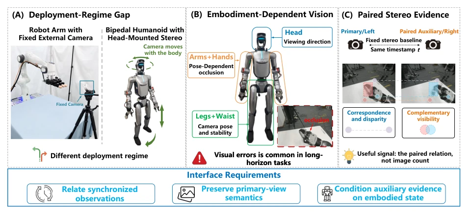
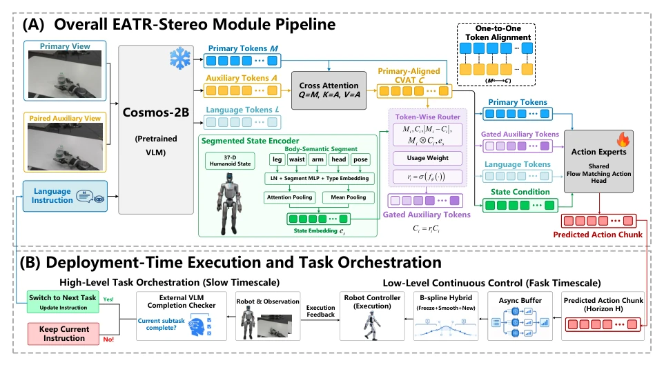
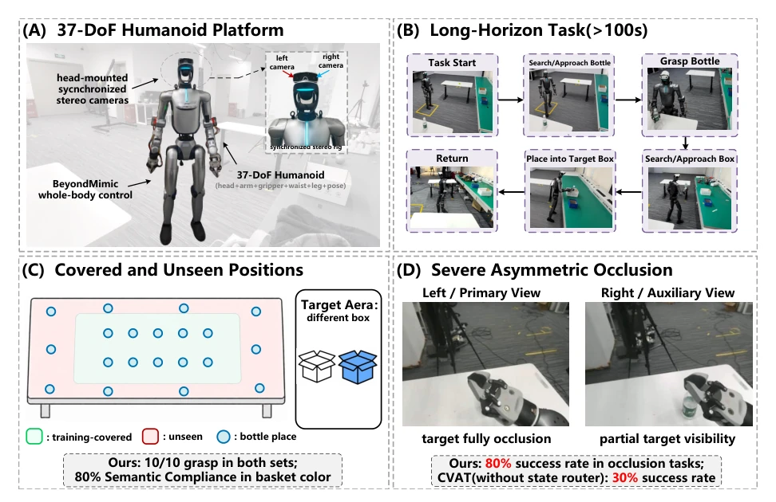
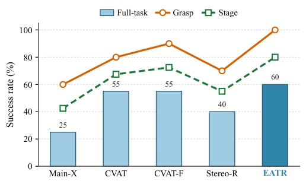

This paper injects a strong shot of adrenaline into long-horizon humanoid robot control, but the prescription is a bit "picky". The authors keenly point out that existing VLA models, when handling head-mounted stereo cameras, either crudely discard stereo information or simply concatenate them leading to semantic collapse, even like StereoPolicy directly replacing pre-trained monocular features, which is simply "disabling one's own martial arts for the sake of innovation". EATR-Stereo's cleverness lies in "conservatism": it sticks to the pre-trained primary view semantics, only using auxiliary view information as "reinforcements" called upon as needed. This "clear master-slave" strategy indeed outperforms baselines on physical robots, especially when facing severe occlusion, where recovery success rate spikes from 30% to 80%, can be called a savior for patients with "amnesia". However, this architecture relying on fine-grained proprioceptive segmentation and specific hardware (head-mounted stereo) probably still has questions regarding generalizability, after all not all robots can control 37 degrees of freedom as precisely as Omega.
The core pain point humanoid robots face in long-horizon tasks is the misalignment between "dynamic perception" and "static models". When the robot walks or waves its arms, the head-mounted camera's viewpoint changes drastically, and limbs easily cause self-occlusion [5], [6]. Existing VLA interfaces often fail to effectively utilize the complementary fields of view provided by synchronized stereo cameras: monocular input lacks disparity and occlusion compensation [7]; simple token concatenation retains both images but fails to establish cross-view spatial consistency reasoning [8]; while attempts like StereoPolicy associate views, they replace original monocular tokens through fusion, destroying the pre-trained model's semantic structure [7]. Furthermore, existing methods lack mechanisms to dynamically associate the selection of visual evidence with the robot's proprioceptive state (such as limb pose, occlusion status) [12], [13]. This leads to in long-horizon tasks, once primary view evidence is lost, the policy cannot effectively utilize auxiliary views for recovery, causing task failure. Therefore, there is an urgent need for an interface that can both preserve pre-trained semantics and intelligently route stereo evidence based on proprioceptive state.

Fig. 1. Motivation for paired stereo in humanoid VLA control. (A) Stationary-camera arm settings do not capture the head-camera dynamics of bipedal whole-body motion. (B) Gait, head and waist motion, and limb configuration alter viewpoint, camera stability, and self-occlusion, making visual evidence embodiment-dependent and consequential over long horizons. (C) A synchronized stereo pair observes the same instant from a fixed or calibratable baseline, providing correspondence, disparity, and complementary visibility. These conditions motivate an interface that relates synchronized observations, preserves primary-view semantics, and conditions auxiliary evidence on embodied state.
EATR-Stereo proposes a framework of "primary view priority, auxiliary view on-demand routing". In the overall process, the system freezes the pre-trained VLM (Cosmos), splitting synchronized stereo images into Primary and Auxiliary views. First, the VLM encodes both separately, retaining the primary view Token sequence $M_t$ unchanged, ensuring the original semantic path is not contaminated. Next, construct Cross-View Auxiliary Tokens (CVAT): using primary view Tokens as Query, auxiliary view Tokens as Key/Value, through multi-head cross-attention mechanism, aggregating auxiliary view complementary information for each primary view Token, generating CVAT sequence $C_t$ aligned with the primary view. The core innovation lies in "Embodied Perception Routing": the system introduces a body-segmented proprioceptive encoder, dividing robot state (legs, arms, head, waist, pose) into 5 categories, extracting historical state features. These features, along with primary view Tokens, CVAT Tokens and their interaction relationships, are jointly input into the routing network to predict auxiliary weights $r_{t,i}$ for each Token. Finally, only the CVAT stream undergoes gating scaling, concatenated with primary view and language Tokens, input to the Action Expert. This design enables the robot to dynamically decide whether to enable auxiliary view information based on current pose (e.g., arm occlusion), rather than blindly fusing.

Fig. 2. Overview of EATR-Stereo and its deployment pipeline. (A) A frozen pretrained VLM encodes the synchronized primary and auxiliary views with the language instruction. Primary-query cross-view attention constructs a separate, primary-aligned CVAT stream while preserving the native primary tokens. Body-segmented proprioception conditions token-wise CVAT routing before a shared flow-matching action head predicts an action chunk. (B) At deployment, an external VLM updates the instruction through a slow-timescale completion loop, while asynchronous buffering and local B-spline stitching support fast-timescale control. Deployment components lie outside learned stereo routing; the reported real-robot protocol uses VLM orchestration.
The study was validated on the 33-DoF HONOR Omega 1.0 humanoid robot, tasks being search-grasp-place-return long-horizon operations exceeding 100 seconds. Baselines include GR00T series, StereoPolicy, and various variants. Results show EATR-Stereo achieves 60.0% complete task success rate, 100% grasp success rate, significantly outperforming StereoPolicy (45.0%) and GR00T (35.0%). In severe asymmetric occlusion scenarios (primary view fully occludes target), EATR-Stereo's recovery success rate reaches 80%, while stateless routing CVAT is only 30%. Ablation experiments confirm that retaining primary view Tokens, introducing CVAT, and body-segmented proprioceptive routing are indispensable, jointly contributing to performance improvement. Additionally, in RoboCasa simulation, this method also demonstrated superior generalization ability compared to other multi-view methods.

Fig. 3. Real-humanoid long-horizon evaluation under a safety-assisted protocol allowing at most two interventions per trial. (A) The HONOR Omega 1.0 platform with synchronized head-mounted stereo cameras and BeyondMimic whole-body control. (B) The over 100s search–approach–grasp–place–return task. (C) Demonstration-covered (ID) and unseen (OOD) bottle positions tested in a fixed order; annotations report the observed 10/10 grasp result for each split and 80% basket-color compliance. (D) Targeted severe asymmetric-occlusion analysis, where the bottle is fully hidden in the primary view but remains partially visible in the auxiliary view; EATR-Stereo recovers in 8/10 trials, compared with 3/10 for CVAT without state routing.

Fig. 4. Physical-humanoid ablations over 20 trials per method. CVAT-F denotes CVAT-Flat and Stereo-R denotes Stereo-Route.